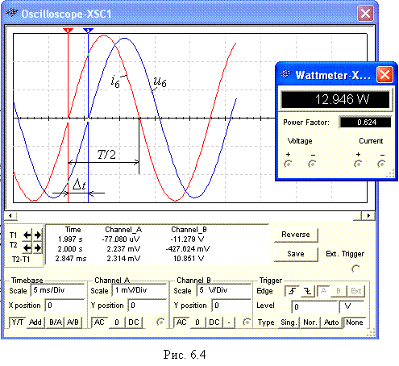

Задание 4. Провести измерения токов, напряжений и
углов сдвига фаз между ними в ветвях, содержащих соответственно RL-, RC- и RLC-элементы.
С этой целью:
- установить частоту f = 50 Гц источника напряжения е1 и подключить ветвь R4L4 к источнику, предварительно
отключив ветвь с конденсатором
C3. Показания приборов занести в табл. 6.3. Угол j определить косвенным методом,
воспользовавшись осциллограммами напряжения и тока ветви или из показания
ваттметра XWM1.
Для удобства измерений изменяйте чувствительность каналов и длительность
развёртки осциллографа.
Рассчитать полное Z4, активное R4 и
реактивное XL4 сопротивления ветви R4L4 и занести их значения в табл. 6.3.
Убедиться, что ток
i в RL-ветви отстаёт по фазе от
напряжения u на угол j4 = arctg(XL4/R4); скопировать (или зарисовать) в отчёт осциллограммы
напряжения и тока RL-ветви;
Т а б л и ц а 6.3
|
Ветвь |
Измерено |
Рассчитано |
||||
|
U, B |
I, A |
j, град |
Z = U/I, Ом |
R = Zcosj, Ом |
X = Zsinj, Ом |
|
|
R4L4 |
|
|
|
|
|
|
|
R5C5 |
|
|
|
|
|
|
|
R6L6C6 |
|
|
|
|
|
|
- повторить предыдущее задание для ветви R5C5, предварительно отключив
четвёртую ветвь. Убедиться, что ток i
в RC-ветви опережает по фазе напряжения
u на угол j5 = arctg(-XC /R5);
- скопировать (или зарисовать) осциллограммы
напряжения и тока RC-ветви;
- повторить
предыдущее задание для ветви с элементами R6, L6 и С6,
предварительно отключив пятую ветвь. Убедится, что в RLC-ветви угол сдвига фаз j6 между напряжением и током зависит
от величины реактивного сопротивления
X6 = XL6 - XC6.
Если при частоте f = 50 Гц, угол j6 = arctg(XL6 - XC6)/R6 > 0, то, уменьшив частоту до 20-30
Гц, угол j6 изменит свой знак, и наоборот, если при f = 50 Гц, угол j6 < 0, то, увеличив частоту f до 100-120 Гц, ток будет отставать по фазе от
напряжения, при этом угол j6 > 0.
В качестве примера на рис.
6.4 представлены осциллограммы напряжения и тока R6L6C6-ветви и показание ваттметра XWM1 при указанных на рис. 6.3 параметрах элементов схемы. Анализ
осциллограмм показывает, что ток i6 опережает по фазе
напряжение u6 на угол
j 6 = -360Dt/T »
-360×2,847/4×5 »
- 51,3°.
Воспользовавшись
показанием ваттметра, находим модуль угла

½j6÷ = arccos(0,624) = 51,4°.